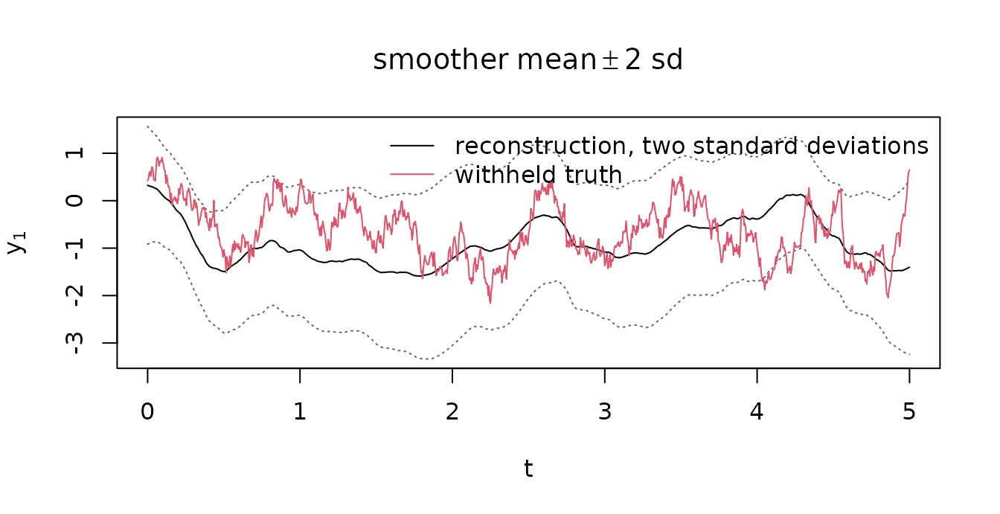
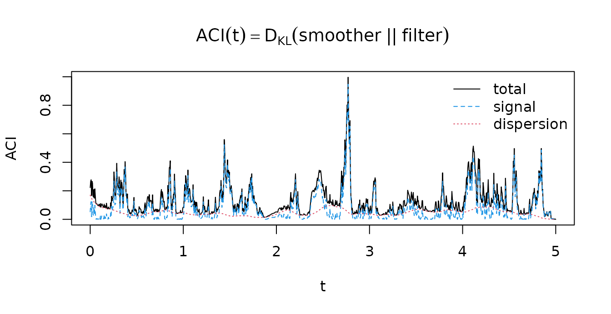

Assimilative causal inference (ACI) in R
Source:vignettes/vignette-1-intro.Rmd
vignette-1-intro.Rmd1. The question
Assimilative causal inference (Andreou, Chen and Bollt, 2026) treats causality as an inverse problem. Given a model of how an observed process x and a hidden process y evolve together, it asks whether the future of x carries information about y_t that the past of x did not. If it does, y drives x, and the amount of new information is the strength of that influence at time t. The answer is computed along one trajectory, so it describes causality as it happened rather than on average.
The causal influence range (Andreou and Chen, 2026) extends the question from strength to duration: for how long does an influence planted at time t persist, and how far back did the precursors of an event reach. This release computes the forward range.
2. The model comes first
In a regression workflow the model is the output: lm()
is handed data and returns coefficients. Here the model is the input, a
statement of how the observed and hidden variables evolve and how noisy
each is, supplied before the question is asked. It can be a benchmark
constructor such as aci_dyad_model(), the coefficient
blocks written directly with aci_model(), or a full drift
that aci_model_from_affine() splits for you. The
closed-form ACI engine describes the three routes. Learning the
model from data is not part of this release.
Two reconstructions and one number
Given the model, two Gaussian reconstructions of the hidden state are available in closed form:
- the filter p(y_t \mid x_{\le t}), what the past of x says.
- the smoother p(y_t \mid x_{\le T}), what the past and the future of x say together.
If the future sharpens the reconstruction, y influenced x. The ACI metric is the relative entropy between the two,
\mathrm{ACI}(t) = D_{\mathrm{KL}}\!\big(p^{\text{smoother}}_t \,\big\|\, p^{\text{filter}}_t\big) \ge 0,
and it splits into a signal part, from disagreement between the two means, and a dispersion part, from disagreement between the two spreads.
3. A worked example
The model comes first, so the example simulates from it and holds the hidden path aside to check the reconstruction against.
truth <- aci_dyad_model(params = list(d_x = 1, gamma = 2, f_x = 1.5, s_x = 0.7,
d_y = 1, f_y = 0.5, s_y = 2))
sim <- simulate(truth, seed = 8, t_end = 5, dt = 5e-3, burn_in = 1)
dat <- data.frame(t = sim$obs$t, x1 = sim$obs$x[, 1], y = sim$hidden[, 1])
head(dat, 3)
#> t x1 y
#> 1 0.000 1.221123 0.4218527
#> 2 0.005 1.198887 0.4526444
#> 3 0.010 1.194724 0.5773667The engine takes an observation object rather than a data frame, so
the observed column goes through observed_trajectory().
That call is also the way in for your own data: it derives the time step
from the supplied times and refuses a non-uniform grid.
ob <- observed_trajectory(dat$t, dat$x1, names = "x1")
ob
#> <obs_traj> k = 1, N+1 = 1001, dt = 0.005, span [0, 5]Supply the model, the observations and a prior on the hidden state.
aci_filter() and aci_smoother() return the two
reconstructions, and aci() runs the pair and scores every
time point.
init <- list(mean = 0, cov = matrix(1, 1, 1))
filt <- aci_filter(truth, ob, init = init)
smoo <- aci_smoother(truth, ob, filter = filt)
res <- aci(truth, ob, init = init)Name the prior. Omitting cov falls back to a diffuse
prior with a warning, and the opening steps of such a run show the prior
washing out rather than anything causal.
4. Read the result
plot(smoo, truth = dat$y)
legend("topright", c("reconstruction, two standard deviations", "withheld truth"),
col = c(1, 2), lty = 1, bty = "n")
The smoother’s reconstruction of the hidden path with a band of two standard deviations, against the path that was withheld.
plot(res)
The ACI metric along the record, with its signal and dispersion parts.
print() reports the peak of the metric and where it
fell:
res
#> <aci_result> engine = cgns | peak ACI = 0.9968 at t = 2.775. The influence range
For how long does y influence x_1? aci_range() answers per
anchor time:
fc <- aci_range(res, anchors = seq(1L, length(ob$t), by = 25L))
#> Warning in .forward_cir_compiled(bundle, filter = x$paths$filter, init =
#> x$handles$init, : 1 forward CIR values masked (M < 1e-05); interpret CIRs
#> jointly with the ACI metric (Andreou & Chen 2026, Remark B.4).
fc
#> <cir_result> forward | method = exact (objective_on_truncated_table) | masked/NA: 1 of 41
#> status: resolved 20, censored 20, insufficient 1
head(data.frame(t = fc$t, tau = fc$tau, M = fc$M, status = fc$status), 4)
#> t tau M status
#> 1 0.000 0.05790157 0.2617151 resolved
#> 2 0.125 0.11452837 0.1107143 resolved
#> 3 0.250 0.07026236 0.3480466 resolved
#> 4 0.375 0.03668586 0.4332652 resolved
plot(fc)The forward causal influence range at the reported anchor times.
Each row is one anchor time t. tau is the
range in the model’s time units and M is the peak
finite-lag divergence there. anchors chooses which anchor
times are reported, and only those rows are formed, which matters
because forming every row of a long record is quadratic work.
An anchor whose peak divergence is too small to divide by is masked
rather than reported as an inflated length, and the warning above says
how many. status carries that reading and three others:
table(fc$status)
#>
#> resolved censored below_threshold insufficient
#> 20 20 0 1Here 20 of the 41 anchors come back censored, a property
of a short record rather than of the model: after an anchor late in a
five-unit series there is not always enough future left to resolve the
influence it planted, and a censored range is a lower bound. The decline
of the range at the end of the plot is the same finite-record effect.
The closed-form ACI engine gives the full status vocabulary and
the conventions each number is computed under.
6. Scope of this release
What is here is the closed-form engine: models in the conditional Gaussian nonlinear system (CGNS) class, for which the filter, the smoother and the metric have exact solutions, and the forward influence range. Learning the dynamics from data, the backward range, significance testing and the ensemble engine for systems outside the class are not in this release.
The closed-form ACI engine
(vignette("vignette-2-advanced")) documents the machinery
and its arguments. Reproducing the reference MATLAB codebase
(vignette("vignette-3-matlab")) states which numbers of the
authors’ implementation this package reproduces, and under which
conventions. ?aci_references lists the sources.
References
Andreou, M., Chen, N. and Bollt, E. (2026). Assimilative causal inference. Nature Communications, 17, 1854. doi:10.1038/s41467-026-68568-0
Andreou, M. and Chen, N. (2026). Bridging prediction and attribution: identifying forward and backward causal influence ranges using assimilative causal inference. arXiv:2510.21889. doi:10.48550/arXiv.2510.21889